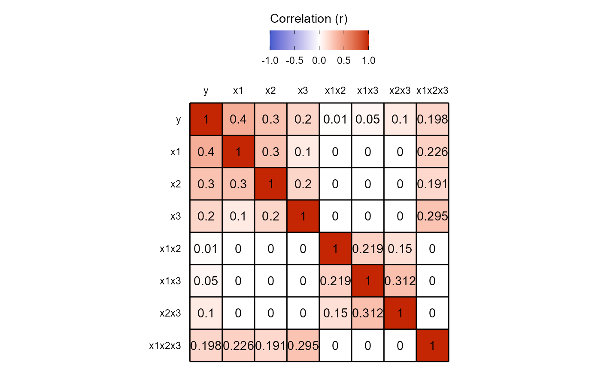
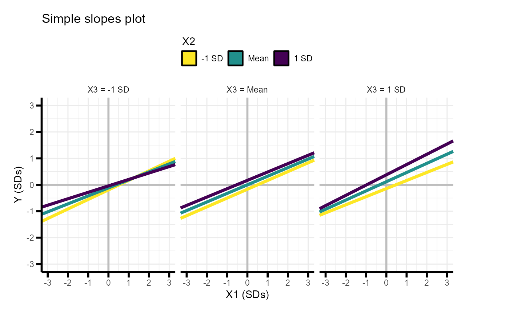

Interaction Power: Power analyses for 3-way interactions
David AA Baranger
Source:vignettes/articles/InteractionPoweR3wayvignette.Rmd
InteractionPoweR3wayvignette.RmdThis vignette describes how to run power analyses for 3-way interactions. It assumes you are already familiar with power analyses for 2-way interactions. If you aren’t, check out our tutorial paper or the main vignette.
Introduction
Three-way interaction analyses take the form:
\[ Y \sim \beta_0 + X_1\beta_1 + X_2\beta_2 + X_3\beta_3 +X_1X_2\beta_4 + X_1X_3\beta_5 +X_2X_3\beta_6 +X_1X_2X_3\beta_7 +\epsilon \]
That’s a lot of effect sizes! If you think about the correlation matrix for a linear regression with 7 independent variables, that’s 28 different correlations. Luckily, because of our assumptions - that everything is mean-centered and that our variables are multivariate normal, only 10 effects need to be specified. See Urge et al. for more on this. The user needs to specify the relation between each variable and our dependent variable \(Y\) (7 effects), as well as the correlations between \(X_1\), \(X_2\), and \(X_3\) (3 effects). All other correlations are either 0 or are fully determined by the correlations between \(X_1\), \(X_2\), and \(X_3\). In 2-way interactions, our assumptions result in the handy outcome that the interaction term is uncorrelated with the main effects. This is not the case for 3-way interactions. In fact, the 3-way interaction term will nearly always be correlated with at least one of the main effects (\(X_1\), \(X_2\), and \(X_3\)) unless all of the correlations between \(X_1\), \(X_2\), and \(X_3\) are 0. Luckily, the 3-way interaction term is uncorrelated with the 2-way interaction terms (which are all correlated with each other), so at least there’s that. Even so, multicollinearity is a fact of life when you’re testing 3-way interactions.
As a result of the multicollinearity inherent to 3-way interactions, the correlation between \(Y\) and \(X_1X_2X_3\) is not a very useful metric of the interaction effect size. For example, if this correlation is small, the magnitude of the regression coefficient \(\beta_7\) could very easily have the opposite sign, and still be significant. Thus, instead of the correlation, our power analysis function for 3-way interactions uses \(\beta_7\) as the interaction effect that users specify.
As always, users have the option of specifying the reliability of \(Y\), \(X_1\), \(X_2\), and \(X_3\). The default is 1 (perfect reliability), though that is almost guaranteed to be an unreasonable assumption in most observational research. Special thanks to StackExchange user R Carnell for helping with the formula for the reliability of a 3-way interaction term.
First steps
Ok, lets run a power analysis for a single regression.
library(InteractionPoweR)
power.results= power_interaction_3way_r2(N = 800, # Sample size
b.x1x2x3 = .05, # Interaction regression coefficient
r.x1.y = .4, # Main effects
r.x2.y = .3,
r.x3.y = .2,
r.x1x2.y = .01, # 2-way interactions
r.x1x3.y = .05,
r.x2x3.y = .1,
r.x1.x2 = .3, # Correlation between main effects
r.x1.x3 = .1,
r.x2.x3 = .2)## Performing 1 analyses##
## Attaching package: 'dplyr'## The following objects are masked from 'package:stats':
##
## filter, lag## The following objects are masked from 'package:base':
##
## intersect, setdiff, setequal, union
power.results## pwr N b.x1x2x3 r.y.x1 r.y.x2 r.y.x3 r.y.x1x2 r.y.x1x3 r.y.x2x3
## 1 0.4022313 800 0.05 0.4 0.3 0.2 0.01 0.05 0.1
## r.x1.x2 r.x1.x3 r.x2.x3 rel.x1 rel.x2 rel.x3 rel.y alpha
## 1 0.3 0.1 0.2 1 1 1 1 0.05We see we have 40% power.
Getting more information
We can still request detailed_results = TRUE to get more
information about the analysis:
power.results= power_interaction_3way_r2(N = 800, # Sample size
b.x1x2x3 = .05, # Interaction regression coefficient
r.x1.y = .4, # Main effects
r.x2.y = .3,
r.x3.y = .2,
r.x1x2.y = .01, # 2-way interactions
r.x1x3.y = .05,
r.x2x3.y = .1,
r.x1.x2 = .3, # Correlation between main effects
r.x1.x3 = .1,
r.x2.x3 = .2,
detailed_results = TRUE)## Performing 1 analyses
power.results## pwr N b.x1x2x3 r.y.x1 r.y.x2 r.y.x3 r.y.x1x2 r.y.x1x3 r.y.x2x3
## 1 0.4022313 800 0.05 0.4 0.3 0.2 0.01 0.05 0.1
## r.x1.x2 r.x1.x3 r.x2.x3 rel.x1 rel.x2 rel.x3 rel.y alpha f2
## 1 0.3 0.1 0.2 1 1 1 1 0.05 0.003705323
## totalr2 nullr2 df obs.b.x1 obs.b.x2 obs.b.x3 obs.b.x1x2 obs.b.x1x3
## 1 0.2256198 0.2227398 793 0.3248624 0.1681651 0.1168807 -0.008733347 0.02243407
## obs.b.x2x3 obs.b.x1x2x3 obs.r.y.x1 obs.r.y.x2 obs.r.y.x3 obs.r.y.x1x2
## 1 0.09249887 0.05 0.4 0.3 0.2 0.01
## obs.r.y.x1x3 obs.r.y.x2x3 obs.r.y.x1x2x3 obs.r.x1.x2 obs.r.x1.x3
## 1 0.05 0.1 0.1975028 0.3 0.1
## obs.r.x1.x1x2 obs.r.x1.x1x3 obs.r.x1.x2x3 obs.r.x1.x1x2x3 obs.r.x2.x3
## 1 0 0 0 0.2256183 0.2
## obs.r.x2.x1x2 obs.r.x2.x1x3 obs.r.x2.x2x3 obs.r.x2.x1x2x3 obs.r.x3.x1x2
## 1 0 0 0 0.1909078 0
## obs.r.x3.x1x3 obs.r.x3.x2x3 obs.r.x3.x1x2x3 obs.r.x1x2.x1x3 obs.r.x1x2.x2x3
## 1 0 0 0.2950393 0.2192067 0.1502762
## obs.r.x1x2.x1x2x3 obs.r.x1x3.x2x3 obs.r.x1x3.x1x2x3 obs.r.x2x3.x1x2x3
## 1 0 0.3122286 0 0This yields a lot of information, including the observed \(f^2\), the \(TotalR^2\) and \(NullR^2\), the correlation between all the
variables (obs.r) and the regression slopes
(obs.b). We have added some convenience functions to help
make sense of this output.
First, we can look at the correlation matrix as a data frame
cor.mat.3way(power.results = power.results)## y x1 x2 x3 x1x2 x1x3 x2x3
## y 1.0000000 0.4000000 0.3000000 0.2000000 0.0100000 0.0500000 0.1000000
## x1 0.4000000 1.0000000 0.3000000 0.1000000 0.0000000 0.0000000 0.0000000
## x2 0.3000000 0.3000000 1.0000000 0.2000000 0.0000000 0.0000000 0.0000000
## x3 0.2000000 0.1000000 0.2000000 1.0000000 0.0000000 0.0000000 0.0000000
## x1x2 0.0100000 0.0000000 0.0000000 0.0000000 1.0000000 0.2192067 0.1502762
## x1x3 0.0500000 0.0000000 0.0000000 0.0000000 0.2192067 1.0000000 0.3122286
## x2x3 0.1000000 0.0000000 0.0000000 0.0000000 0.1502762 0.3122286 1.0000000
## x1x2x3 0.1975028 0.2256183 0.1909078 0.2950393 0.0000000 0.0000000 0.0000000
## x1x2x3
## y 0.1975028
## x1 0.2256183
## x2 0.1909078
## x3 0.2950393
## x1x2 0.0000000
## x1x3 0.0000000
## x2x3 0.0000000
## x1x2x3 1.0000000Or as a plot
cor.mat.3way(power.results = power.results,return.plot = TRUE)
Note here that while \(\beta_7\) is 0.05, the pairwise correlation between \(Y\) and \(X_1X_2X_3\) is 0.198.
We can also look at the simple slopes as a data frame
simple.slopes.3way(power.results)## X2 X3 intercept slope
## 1 -1 SD -1 SD -0.19254700 0.3611617
## 2 Mean -1 SD -0.11688073 0.3024283
## 3 1 SD -1 SD -0.04121447 0.2436950
## 4 -1 SD Mean -0.16816514 0.3335957
## 5 Mean Mean 0.00000000 0.3248624
## 6 1 SD Mean 0.16816514 0.3161290
## 7 -1 SD 1 SD -0.14378327 0.3060298
## 8 Mean 1 SD 0.11688073 0.3472965
## 9 1 SD 1 SD 0.37754474 0.3885631Or as a plot
simple.slopes.3way(power.results,return.plot = TRUE)
Running multiple analyses
As always, we can run multiple power analyses at once
power.results= power_interaction_3way_r2(N = seq(800,4000,100), # Sample size
b.x1x2x3 = 0.05, # Interaction regression coefficient
r.x1.y = .4, # Main effects
r.x2.y = .3,
r.x3.y = .2,
r.x1x2.y = .01, # 2-way interactions
r.x1x3.y = .05,
r.x2x3.y = .1,
r.x1.x2 = .3, # Correlation between main effects
r.x1.x3 = .1,
r.x2.x3 = .2,
detailed_results = TRUE)## Performing 33 analysesAnd we can plot a power curve
plot_power_curve(power_data = power.results,x = "N",power_target = .9)
And solve for what sample size we would need to have 90% power to detect our effect.
power_estimate(power_data = power.results,x = "N",power_target = .9)## [1] 2780.854In this example,we would need N=2781 to achieve 90% power.
Even though analytic power analyses are fast, with so many parameters
we can easily reach a point where the analysis will take a long time to
run. Say for instance we are interested in testing out 10 different
values of 4 different parameters - that’s 10,000 power analyses. At that
point, it can be helpful to run things in parallel. Parallel analyses
can be run using the cl flag. cl=4 is probably
a reasonable value for most personal computers.